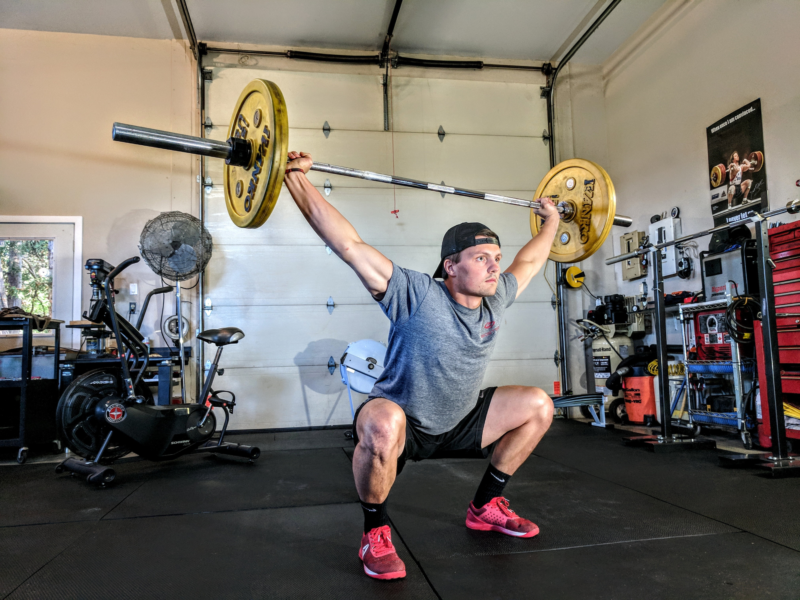

FitHub.Inc
☰
Home
Progress
About
NEWS FEED
The Future Of Health And Fitness: Personalization And Genetic Insight Through DNA Testing
The Future Of Health And Fitness: Personalization And Genetic Insight Through DNA Testing"
Forbes
Equinox's “Fitness Incubator” And Its Search For The Next Zumba
Equinox's “Fitness Incubator” And Its Search For The Next Zumba
Fast Company
The 3 biggest health and fitness lies people believe on social media, according to fitness Instagram star Anna Victoria
The 3 biggest health and fitness lies people believe on social media, according to fitness Instagram star Anna Victoria
INSIDER
Former fitness company exec could face 20 years in kidnapping of Maplewood man
Former fitness company exec could face 20 years in kidnapping of Maplewood man
STLtoday.com
Fitness startup Studio is bringing its audio running classes to Life Fitness treadmills
Fitness startup Studio is bringing its audio running classes to Life Fitness treadmills
TechCrunch
Texas Woman, Who Was Possibly Living at Fitness Center, Found Nearly Drowned in Pool

Texas Woman, Who Was Possibly Living at Fitness Center, Found Nearly Drowned in Pool
The Root
Row yourself to fitness for free (for 14 days) at City Crew
Row yourself to fitness for free (for 14 days) at City Crew
Dallas News (blog)
Will Mauricio Pochettino's fitness obsession be enough to get Tottenham past Arsenal and their new faces?
Will Mauricio Pochettino's fitness obsession be enough to get Tottenham past Arsenal and their new faces?
The Independent
Heart Health with Orangetheory Fitness
Heart Health with Orangetheory Fitness
KXAN.com
North Texas fitness trainer, 27, dies from flu
North Texas fitness trainer, 27, dies from flu
FOX 4 News
Flu Claims 27-Year-Old Fitness Trainer's Life
CBS DFW
Research Suggests Group Fitness Classes Lead To Better Results, Motivation
Research Suggests Group Fitness Classes Lead To Better Results, Motivation
CBS Pittsburgh / KDKA
What is Freeletics? How the new fitness app helps you lose weight and where to download it
What is Freeletics? How the new fitness app helps you lose weight and where to download it
The Sun
Mirror raises $13 million for virtual fitness classes
Mirror raises $13 million for virtual fitness classes
TechCrunch
In-home fitness startup Mirror raises new funds from Spark Capital
New York Business Journal
Jeanette Jenkins On The Best Way To Approach Those Lofty Fitness Goals
Jeanette Jenkins On The Best Way To Approach Those Lofty Fitness Goals
Essence.com
On vacation, exercise your desire for fitness
On vacation, exercise your desire for fitness
Minneapolis Star Tribune
Britney Spears shows off her challenging fitness routine in new video
Britney Spears shows off her challenging fitness routine in new video
hellomagazine.com
4 Habits That Can Take Your Fitness Routine From Good to Great, According to Gunnar Peterson
4 Habits That Can Take Your Fitness Routine From Good to Great, According to Gunnar Peterson
SELF
>
Leigh Halfpenny gives Wales fitness scare ahead of England clash
Leigh Halfpenny gives Wales fitness scare ahead of England clash
SkySports
Leigh Halfpenny gives Wales a fitness scare ahead of England clash
Irish Times
Woman On Life Support After Nearly Drowning At Fitness Center Where She Had Allegedly Been Living For Weeks
Woman On Life Support After Nearly Drowning At Fitness Center Where She Had Allegedly Been Living For Weeks
BET
Woman Secretly Living At Life Time Fitness Found Nearly Drowned In Pool
Woman Secretly Living At Life Time Fitness Found Nearly Drowned In Pool
CBS DFW
News
Workout
Music